Southwest Florida
Vaulted ceilings, white oak, and a wall of glass to the water — this home was designed around the way a family actually gathers.
The plan opens the kitchen, dining, and living areas into one generous space, anchored by a marble waterfall island and a linear fireplace. Warm white oak cabinetry runs throughout, softening the architecture's clean lines and tying the rooms together. Steel-framed doors and full-height glass keep the light and the view moving through the house.
Every room was considered — from the layered primary bath with its arched mirrors and brass fittings, to the fitted closet, the laundry, and the stair. The result is a home that feels bright and open, but never cold: comfortable enough to live in every day, and polished enough for a house full of guests.


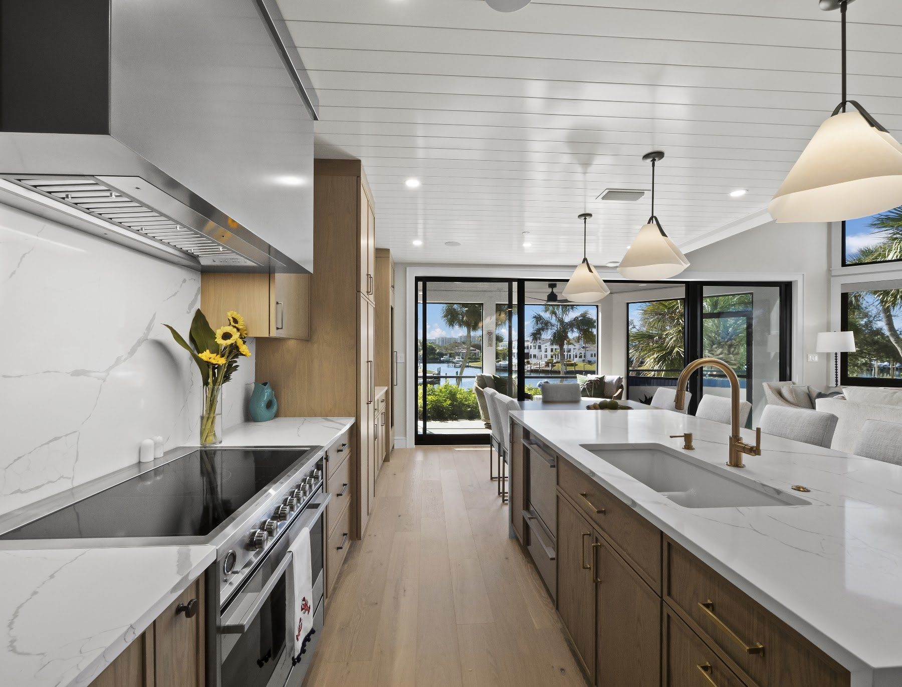
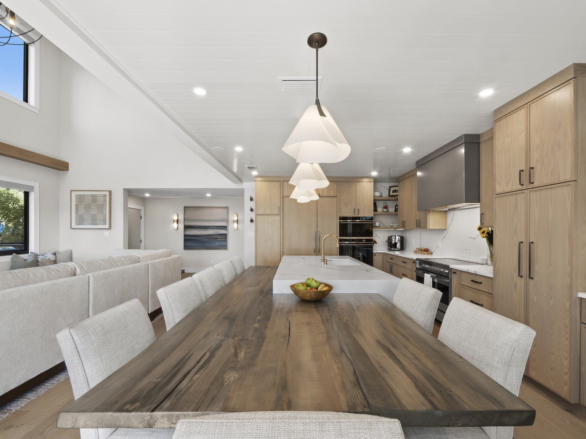
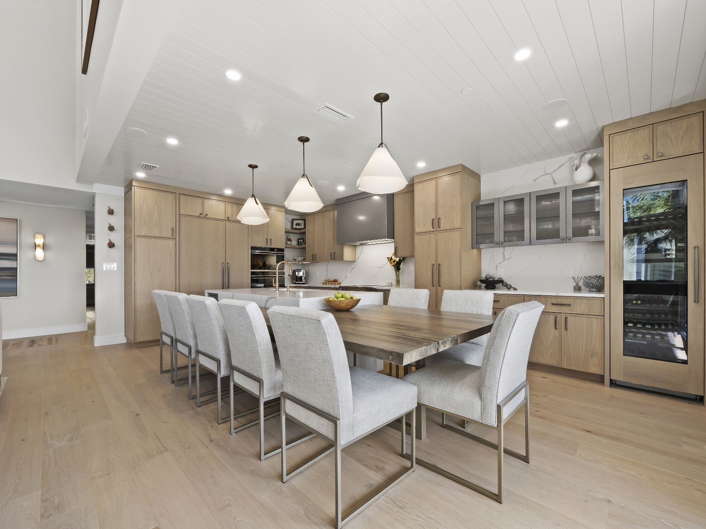
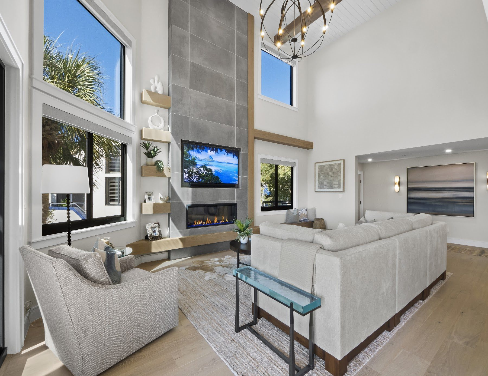
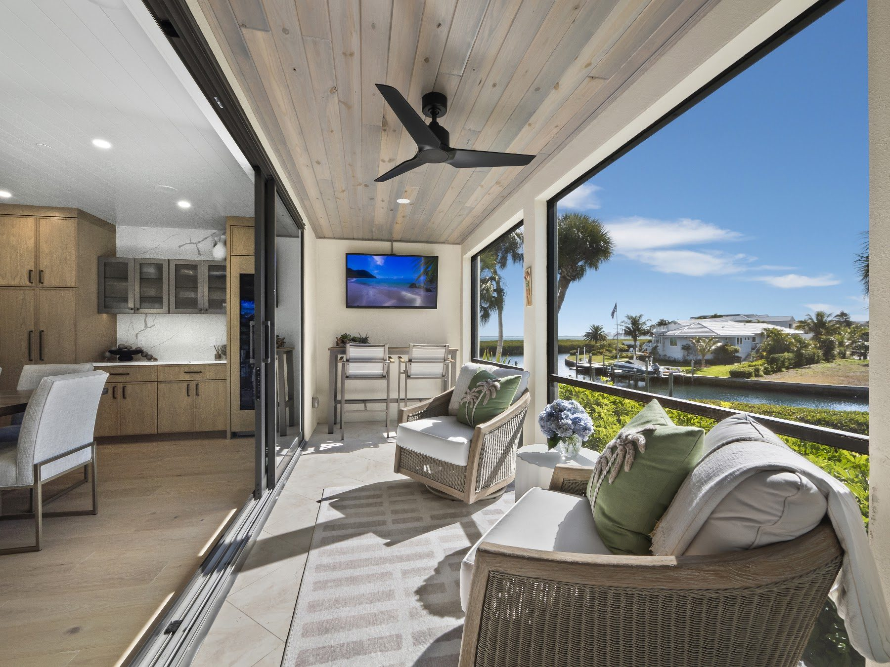
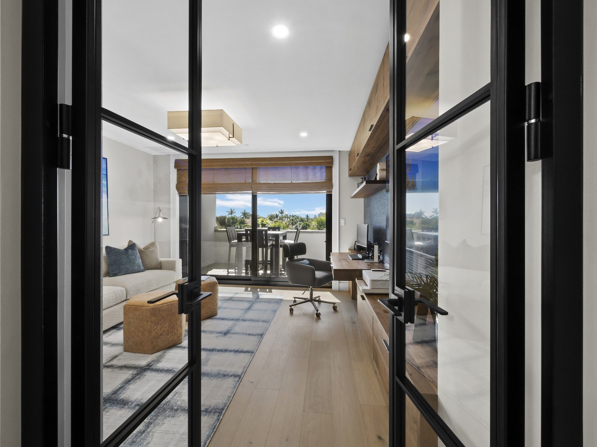

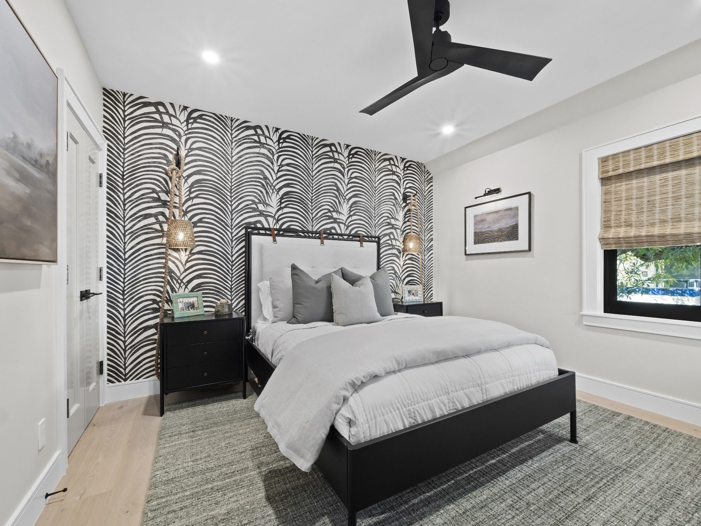
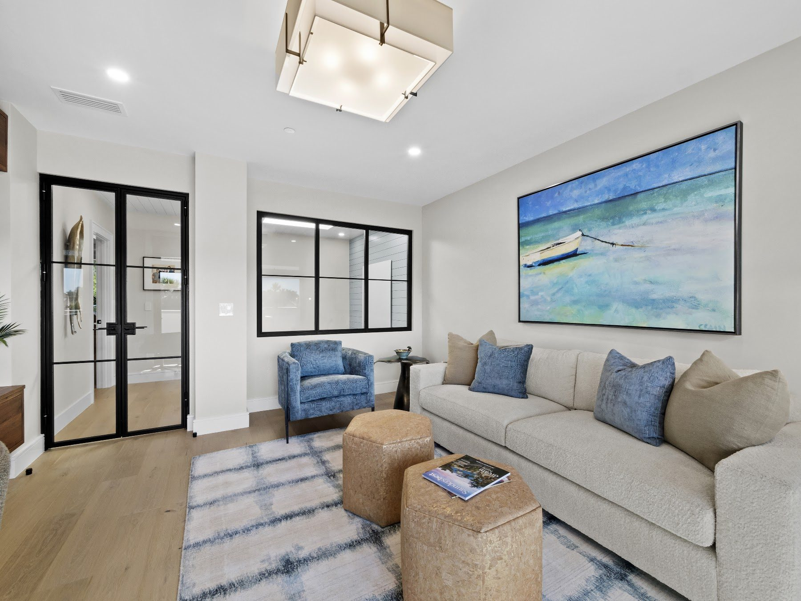
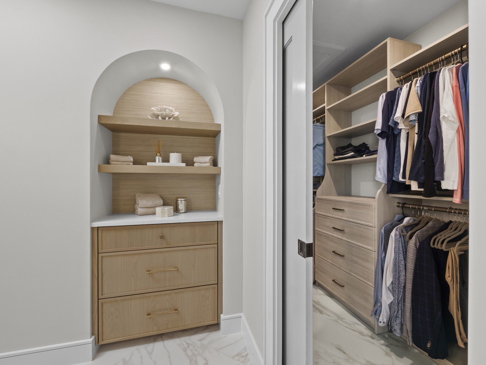
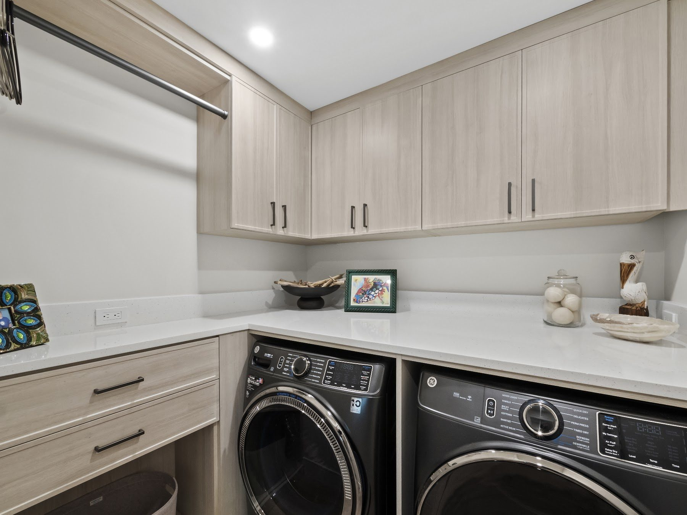
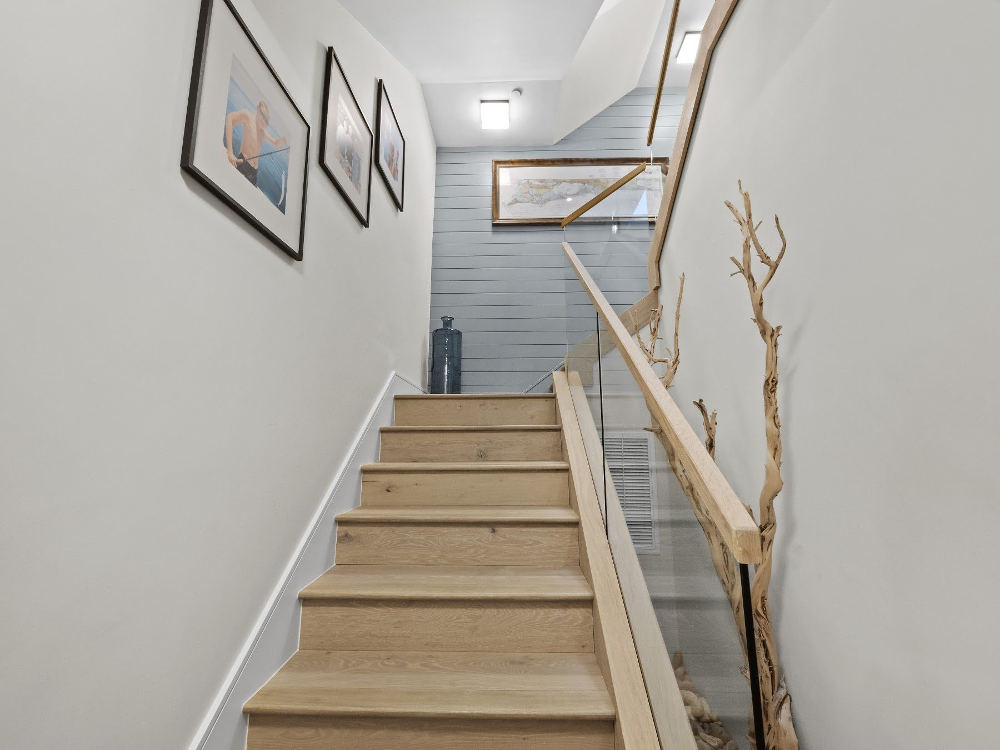
Tell us about your home and what you're hoping to create — we'd love to hear from you.
Inquire About a Project